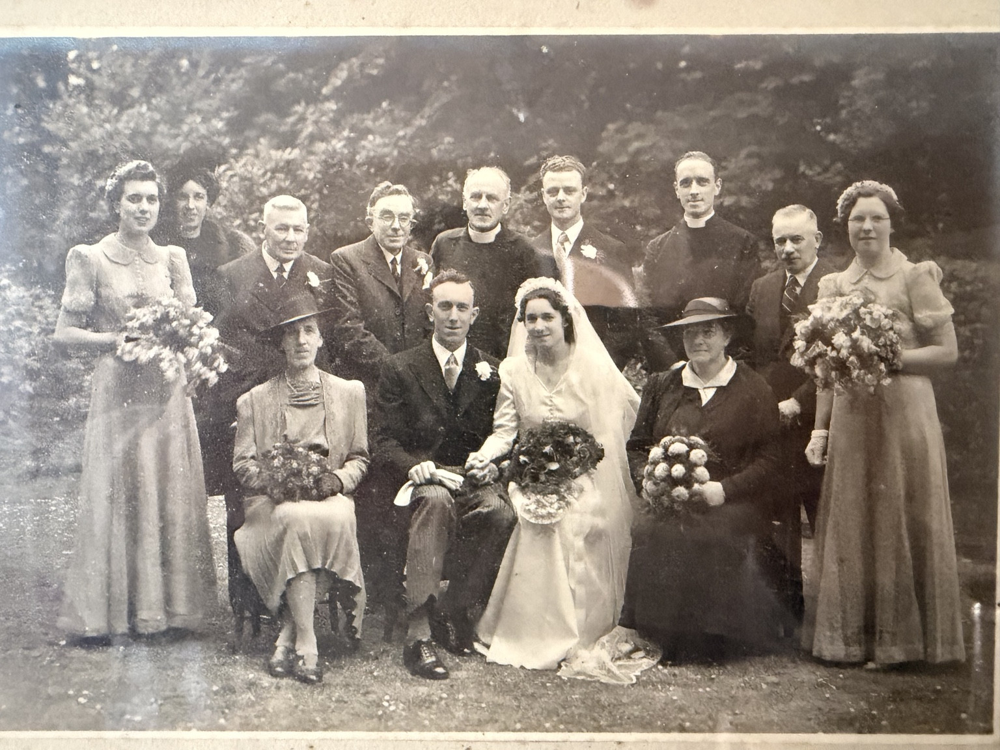
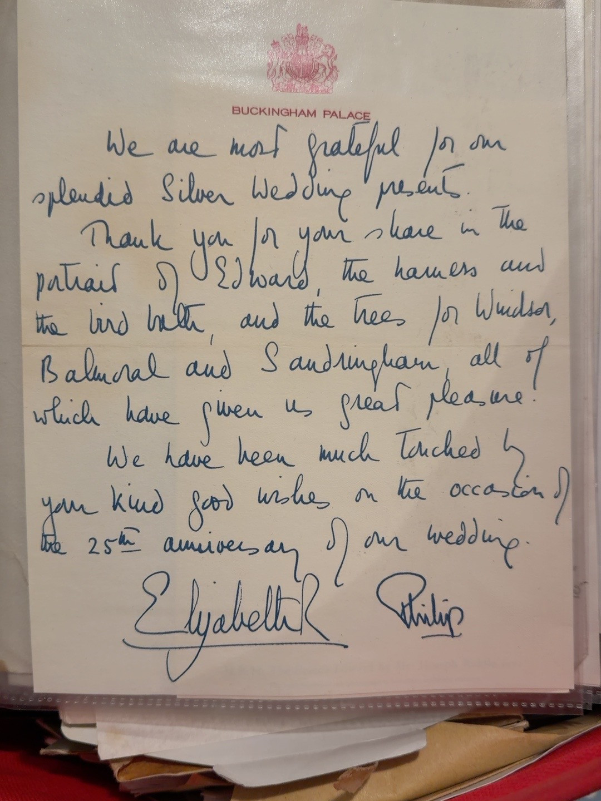

Biography
Birth and baptism
The England and Wales birth index lists Eric William V Hawes, Croydon district, quarter 1 of 1909, volume 2A, page 344. The maiden-name field is blank in the supplied extract; this does not disprove the family identification of Frances Ellen Creese as his mother. The baptism date comes from the GEDCOM and the register has not been independently checked.
Family connections
The revised GEDCOM names Kathleen Beatrice Rumary as Eric’s wife. A family wedding photograph survives. Family-supplied research identifies his younger siblings as George W., Gladys Madeline (known as Sally) and Mary.
Work at Buckingham Palace
Family testimony identifies Eric as a messenger at Buckingham Palace during the 1970s. His exact employment dates, duties and employing department remain to be established. A family-held acknowledgement of Queen Elizabeth II and Prince Philip’s Silver Wedding anniversary in 1972 has additional contextual significance, but the letter alone does not establish how Eric received it. A separate family branch also includes James (surname not yet supplied), who worked as a Palace Constable; he is not being added to the Hawes pedigree without verified family connections.
Preserving family privacy
Details of living descendants and the source GEDCOM are not published on this public website.
Documents & photographs

Original photograph and digitally restored copy, identified by Antony Greenfield.
Open photograph →
Original group photograph, provisional identifications
Open record →
The Enchanted Rose
Open record →
Family-held letter; personal association not proved
Open record →References and research
- Buckingham Palace Silver Wedding letter, 1972
- Eric and Kathleen’s wedding photograph
- England & Wales Births 1837–2006: Eric William V Hawes, 1909 Q1, Croydon, 2A/344
Original evidence is distinguished from GEDCOM assertions and family recollections. Personal details of living descendants are withheld.